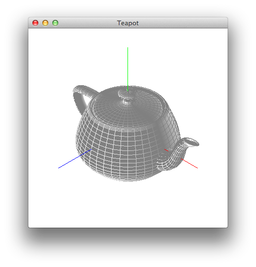
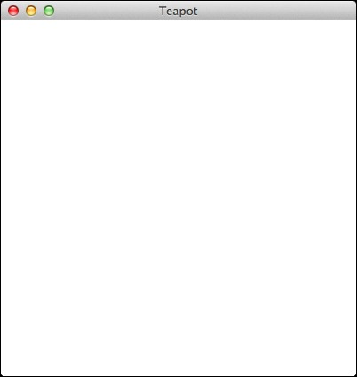
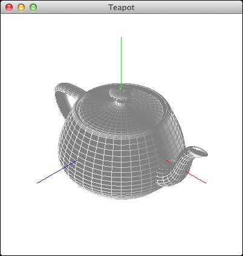
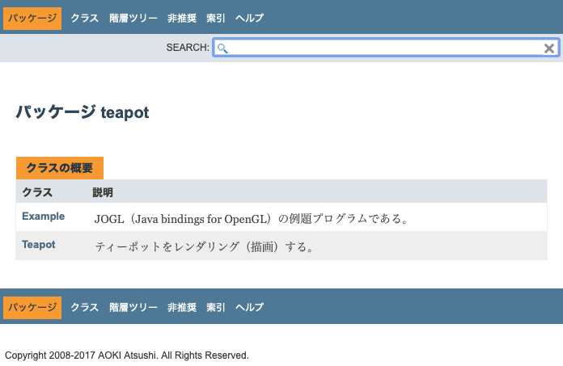

ティーポットをソリッドとワイヤーフレームの両方で描画することにチャレンジしましょう。以下の完成図のように、XYZ軸を赤緑青の線で描き、その中央にティーポットを描き出します。

視点 = [10 , 10 , 10]
注視点 = [0 , 0 , 0]
上方向ベクトル = [0 , 1 , 0]
視界角 = 15
そのために基（ベース）になるプログラムをリポジトリからチェックアウトして入手してください。
$ mkdir -p ~/AP/Java/Teapot/ $ cd ~/AP/Java/Teapot/ $ svn checkout --username student http://bluetree.kyoto-su.ac.jp/repositories/AP/Java/Teapot/Teapot_Problem/ A Teapot_Problem/Teapot.app A Teapot_Problem/Teapot.app/Contents A Teapot_Problem/Teapot.app/Contents/MacOS A Teapot_Problem/Teapot.app/Contents/Resources A Teapot_Problem/Teapot.app/Contents/Resources/Scripts A Teapot_Problem/Teapot.app/Contents/Resources/description.rtfd A Teapot_Problem/teapot A Teapot_Problem/Makefile A Teapot_Problem/PrepareJavaNativeInterfaceLibraries.sh A Teapot_Problem/Teapot.app/Contents/Info.plist A Teapot_Problem/Teapot.app/Contents/MacOS/applet A Teapot_Problem/Teapot.app/Contents/PkgInfo A Teapot_Problem/Teapot.app/Contents/Resources/JavaApp.icns A Teapot_Problem/Teapot.app/Contents/Resources/Scripts/main.scpt A Teapot_Problem/Teapot.app/Contents/Resources/applet.icns A Teapot_Problem/Teapot.app/Contents/Resources/applet.rsrc A Teapot_Problem/Teapot.app/Contents/Resources/description.rtfd/TXT.rtf A Teapot_Problem/build.xml A Teapot_Problem/gluegen-rt-natives-macosx-universal.jar A Teapot_Problem/gluegen-rt.jar A Teapot_Problem/jogl-all-natives-macosx-universal.jar A Teapot_Problem/jogl-all.jar A Teapot_Problem/teapot/Example.java A Teapot_Problem/teapot/Teapot.java A Teapot_Problem/teapot.mf Checked out revision 2756. $
以下に「teapot」というパッケージを表しているディレクトリの中に収められた2つのプログラム「Teapot」と「Example」のソースコードを記しておきます。これらをよく読み、当該の「Teapot」の中のハイライトで「// 作成してください。」と書かれている部分を作り、上記の完成図と同じになるようにしてください。なお、当該の「Example」において「TryJOGL（OpenGLを用いてJavaで3次元グラフィックスをやってみよう）」の「Example」からの変更部分をハイライトで示しておきました。おきばりやしとくれやす！
package teapot;
import com.jogamp.opengl.GL;
import com.jogamp.opengl.GL2;
import com.jogamp.opengl.glu.GLU;
import com.jogamp.opengl.util.gl2.GLUT;
/**
* ティーポットをレンダリング（描画）する。
* XYZ軸に加えてティーポットをソリッドとワイヤーフレームの双方で描画する。
* 視界（視点・注視点・上方向ベクトル・視界角・近・遠）もティーポットが保持する。
*/
public class Teapot extends Object
{
/**
* 視点を応答する。
* @return 視点座標（x,y,zの配列）
*/
public double[] eyePoint()
{
return new double[] { 10.0d, 10.0d, 10.0d };
}
/**
* 注視点を応答する。
* @return 注視点座標（x,y,zの配列）
*/
public double[] sightPoint()
{
return new double[] { 0.0d, 0.0d, 0.0d };
}
/**
* 上方向ベクトルを応答する。
* @return 上方向ベクトル（x,y,zの配列）
*/
public double[] upVector()
{
return new double[] { 0.0d, 1.0d, 0.0d };
}
/**
* 視野角を応答する。
* @return 視野角
*/
public double fovy()
{
return 15.0d;
}
/**
* 近を応答する。
* @return 近
*/
public double near()
{
return 0.01d;
}
/**
* 遠を応答する。
* @return 遠
*/
public double far()
{
return 100.0d;
}
/**
* レンダリング（描画）する。
* @param gl グラフィックライブラリ
* @param glu グラフィックライブラリユーテリティ
* @param glut グラフィックライブラリユーテリティツールキット
*/
public void rendering(GL2 gl, GLU glu, GLUT glut)
{
// 作成してください。
// …
// …
// …
// …
// …
// …
// …
// …
// …
// …
// …
// …
// …
// …
// …
// …
// …
// …
// …
// …
// …
// …
// …
// …
// …
return;
}
/**
* ウィンドウのタイトル（ラベル）を応答する。
* @return タイトル文字列
*/
public String windowTitle()
{
return "Teapot";
}
}
package teapot;
import com.jogamp.opengl.GL;
import com.jogamp.opengl.GL2;
import com.jogamp.opengl.glu.GLU;
import com.jogamp.opengl.util.gl2.GLUT;
import com.jogamp.opengl.awt.GLCanvas;
import com.jogamp.opengl.GLAutoDrawable;
import com.jogamp.opengl.GLCapabilities;
import com.jogamp.opengl.GLEventListener;
import com.jogamp.opengl.GLProfile;
import javax.swing.JFrame;
import java.nio.FloatBuffer;
import java.awt.event.WindowAdapter;
import java.awt.event.WindowEvent;
/**
* JOGL（Java bindings for OpenGL）の例題プログラムである。
* OpenGLを使ったJavaによる三次元グラフィックスの初歩的な練習になる。
*/
public class Example extends WindowAdapter implements GLEventListener
{
/**
* GLオブジェクトを記憶するフィールドである。
*/
protected GL2 gl;
/**
* GLユーティリティを記憶するフィールドである。
*/
protected GLU glu;
/**
* GLユーティリティツールキットを記憶するフィールドである。
*/
protected GLUT glut;
/**
* ビューの幅を記憶するフィールドである。
*/
protected int width;
/**
* ビューの高さを記憶するフィールドである。
*/
protected int height;
/**
* 描画オブジェクトを記憶するフィールドである。
*/
protected Teapot displayObject;
/**
* Exampleのコンストラクタである。
*/
public Example()
{
// System.out.println("Example");
// ティーポットのインスタンスを生成する。
this.displayObject = new Teapot();
// OpenGL描画のためのキャンバスを生成する。
GLProfile profile = GLProfile.get(GLProfile.GL2);
GLCapabilities capabilities = new GLCapabilities(profile);
capabilities.setDoubleBuffered(true);
GLCanvas aCanvas = new GLCanvas(capabilities);
aCanvas.addGLEventListener(this);
// フレームを生成し、上記のキャンバスを乗せて、ウィンドウとして開く。
JFrame aFrame = new JFrame(this.displayObject.windowTitle());
aFrame.add(aCanvas);
aFrame.addNotify();
int titleBarHeight = aFrame.getInsets().top;
aFrame.setSize(400, 400 + titleBarHeight);
aFrame.setLocationRelativeTo(null);
// aFrame.setDefaultCloseOperation(JFrame.DO_NOTHING_ON_CLOSE);
aFrame.addWindowListener(this);
aFrame.setFocusable(false);
aFrame.setVisible(true);
return;
}
/**
* OpenGL起動時に初期化のために呼び出される。
* @param aDrawable OpenGLの描画ダーゲット
*/
public void init(GLAutoDrawable aDrawable)
{
// System.out.println("init");
// グラフィックライブラリ（gl）を獲得し、
// グラフィックライブラリユーティリティ（glu）と
// グラフィックライブラリユーティリティツールキット（glut）を生成する。
this.gl = aDrawable.getGL().getGL2();
this.glu = new GLU();
this.glut = new GLUT();
// 材質の有効化
// 陰線隠面処理の有効化
// 片面表示機能の無効化
// 法線ベクトルの有効化
this.gl.glEnable(GL2.GL_COLOR_MATERIAL);
this.gl.glEnable(GL2.GL_DEPTH_TEST);
this.gl.glDisable(GL2.GL_CULL_FACE);
this.gl.glEnable(GL2.GL_NORMALIZE);
return;
}
/**
* OpenGL描画を行う際に呼び出される。
* @param aDrawable OpenGLの描画ダーゲット
*/
public void display(GLAutoDrawable aDrawable)
{
// System.out.println("display");
// 視界（視点・注視点・上方向ベクトル・視界角・近・遠）をティーポットから取得して整（設）える。
double[] eyePoint = this.displayObject.eyePoint();
double[] sightPoint = this.displayObject.sightPoint();
double[] upVector = this.displayObject.upVector();
double fovy = this.displayObject.fovy();
double near = this.displayObject.near();
double far = this.displayObject.far();
// キャンバス（ウィンドウ）の大きさからアスペクト比を求める。
double aspect = (double)width / (double)height;
// プロジェクション（遠近法）を設定する。
this.gl.glMatrixMode(GL2.GL_PROJECTION);
this.gl.glLoadIdentity();
this.glu.gluPerspective(fovy, aspect, near, far);
// 視界を設定する。
this.gl.glMatrixMode(GL2.GL_MODELVIEW);
this.gl.glLoadIdentity();
this.glu.gluLookAt(
eyePoint[0], eyePoint[1], eyePoint[2],
sightPoint[0], sightPoint[1], sightPoint[2],
upVector[0], upVector[1], upVector[2]);
// キャンバスをクリアする。
this.gl.glClearColor(1.0f, 1.0f, 1.0f, 1.0f);
this.gl.glClear(GL2.GL_COLOR_BUFFER_BIT | GL2.GL_DEPTH_BUFFER_BIT);
// 照明を設定する。
this.gl.glEnable(GL2.GL_LIGHTING);
this.gl.glLightModelfv(GL2.GL_LIGHT_MODEL_AMBIENT, this.asFloatBuffer(new float[] { 0.5f, 0.5f, 0.5f, 1.0f }));
this.gl.glLightModelf(GL2.GL_LIGHT_MODEL_LOCAL_VIEWER, 0.0f);
this.gl.glLightModelf(GL2.GL_LIGHT_MODEL_TWO_SIDE, 1.0f);
this.gl.glEnable(GL2.GL_LIGHT0);
this.gl.glLightfv(GL2.GL_LIGHT0, GL2.GL_POSITION, this.asFloatBuffer(new float[] { 0.0f, 0.0f, 1.0f, 0.0f }));
this.gl.glLightfv(GL2.GL_LIGHT0, GL2.GL_SPOT_DIRECTION, this.asFloatBuffer(new float[] { 0.0f, 0.0f, -1.0f }));
this.gl.glLightfv(GL2.GL_LIGHT0, GL2.GL_SPOT_CUTOFF, this.asFloatBuffer(new float[] { 90.0f }));
this.gl.glLightfv(GL2.GL_LIGHT0, GL2.GL_DIFFUSE, this.asFloatBuffer(new float[] { 0.5f, 0.5f, 0.5f, 1.0f }));
this.gl.glLightfv(GL2.GL_LIGHT0, GL2.GL_SPECULAR, this.asFloatBuffer(new float[] { 0.5f, 0.5f, 0.5f, 1.0f }));
this.gl.glLightfv(GL2.GL_LIGHT0, GL2.GL_LINEAR_ATTENUATION, this.asFloatBuffer(new float[] { 0.0f }));
this.gl.glLightfv(GL2.GL_LIGHT0, GL2.GL_QUADRATIC_ATTENUATION, this.asFloatBuffer(new float[] { 0.0f }));
this.gl.glLightfv(GL2.GL_LIGHT0, GL2.GL_CONSTANT_ATTENUATION, this.asFloatBuffer(new float[] { 1.0f }));
// ティーポットをレンダリング（描画）する。
this.displayObject.rendering(this.gl, this.glu, this.glut);
return;
}
/**
* OpenGL表示モードや表示デバイスが変更された際に呼び出される。
* @param aDrawable OpenGLの描画ダーゲット
* @param modeChanged 表示モードが変更されたか否か
* @param deviceChanged 表示デバイスが変更されたか否か
*/
public void displayChanged(GLAutoDrawable aDrawable, boolean modeChanged, boolean deviceChanged)
{
// System.out.println("displayChanged");
return;
}
/**
* OpenGLの資源が破棄された際に呼び出される。
* @param aDrawable OpenGLの描画ダーゲット
*/
public void dispose(GLAutoDrawable aDrawable)
{
// System.out.println("dispose");
return;
}
/**
* OpenGL表示領域が変更された際に呼び出される。
* @param aDrawable OpenGLの描画ダーゲット
* @param x 表示領域のX座標
* @param y 表示領域のY座標
* @param w 表示領域の幅
* @param h 表示領域の高さ
*/
public void reshape(GLAutoDrawable aDrawable, int x, int y, int w, int h)
{
// System.out.println("reshape");
this.width = w;
this.height = h;
this.gl.glViewport(0, 0, width, height);
return;
}
/**
* float配列をfloatバッファに変換する。
* @param array float配列
* @return floatバッファ
*/
private FloatBuffer asFloatBuffer(float[] array)
{
FloatBuffer buffer = FloatBuffer.allocate(array.length);
for (int i = 0; i < array.length; i++)
{
buffer.put(array[i]);
}
buffer.rewind();
return buffer;
}
/**
* ウィンドウを閉じようとした時に呼び出される。
* @param aWindowEvent ウィンドウイベント
*/
public void windowClosing(WindowEvent aWindowEvent)
{
// System.out.println(aWindowEvent.paramString());
// 終了する。
System.exit(0);
return;
}
/**
* ティーポットを描くOpenGLのウィンドウを開く。
* @param arguments コマンドの引数列（文字列の配列）
*/
public static void main(String[] arguments)
{
// System.out.println("main");
new Example();
return;
}
}
「Teapot」の中の赤字で「// 作成してください。」と書かれている部分を作っていない場合には、何も描き出されないウィンドウが1枚開きます。

「Teapot」の中の赤字で「// 作成してください。」と書かれている部分（約30行ほどのプログラム）を作成すれば、ティーポットをソリッドとワイヤーフレームの両方で描画することができます。

Javaドキュメント（javadoc）とアプリケーションを示しておきます。

$ (cd ~/Downloads/ ; curl -O http://www.cc.kyoto-su.ac.jp/~atsushi/deployment/AP/Java/Teapot.app.tar.gz) # まず、アーカイブファイルをダウンロード % Total % Received % Xferd Average Speed Time Time Time Current Dload Upload Total Spent Left Speed 100 4187k 100 4187k 0 0 3018k 0 0:00:01 0:00:01 --:--:-- 3018k $ (cd ~/Downloads/ ; cat ./Teapot.app.tar.gz ; rm -f ./Teapot.app.tar.gz) | (cd ~/Desktop/ ; tar xvfz -) # 次に、アーカイブファイルを展開して、デスクトップ上にアプリケーションを配置 x ./Teapot.app/ x ./Teapot.app/Contents/ x ./Teapot.app/Contents/MacOS/ x ./Teapot.app/Contents/Resources/ x ./Teapot.app/Contents/Info.plist x ./Teapot.app/Contents/PkgInfo x ./Teapot.app/Contents/Resources/JavaApp.icns x ./Teapot.app/Contents/Resources/applet.rsrc x ./Teapot.app/Contents/Resources/description.rtfd/ x ./Teapot.app/Contents/Resources/Java/ x ./Teapot.app/Contents/Resources/Scripts/ x ./Teapot.app/Contents/Resources/applet.icns x ./Teapot.app/Contents/Resources/Scripts/main.scpt x ./Teapot.app/Contents/Resources/Java/teapot-natives-macosx-universal.jar x ./Teapot.app/Contents/Resources/Java/natives/ x ./Teapot.app/Contents/Resources/Java/teapot.jar x ./Teapot.app/Contents/Resources/Java/natives/macosx-universal/ x ./Teapot.app/Contents/Resources/Java/natives/macosx-universal/libnativewindow_awt.dylib x ./Teapot.app/Contents/Resources/Java/natives/macosx-universal/libgluegen_rt.dylib x ./Teapot.app/Contents/Resources/Java/natives/macosx-universal/libnativewindow_macosx.dylib x ./Teapot.app/Contents/Resources/Java/natives/macosx-universal/libjogl_mobile.dylib x ./Teapot.app/Contents/Resources/Java/natives/macosx-universal/libnewt_head.dylib x ./Teapot.app/Contents/Resources/Java/natives/macosx-universal/libjogl_desktop.dylib x ./Teapot.app/Contents/Resources/description.rtfd/TXT.rtf x ./Teapot.app/Contents/MacOS/applet $ (cd ~/Desktop/ ; xattr -cr ./Teapot.app) # そして、アプリケーションの拡張属性を再帰的にクリア $ (cd ~/Desktop/ ; sudo spctl --master-disable ; open ./Teapot.app ; sudo spctl --master-enable) # openコマンドで起動、ただし、Gatekeeperを開け閉めしながら、または、TryJOGL.appをダブルクリック Password: # 管理者のパスワードを入力、Gatekeeperの開閉のために $